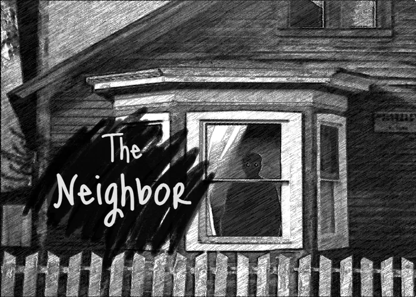

Click here to play the game!
You’ve finally moved into your new house, which should be the end of your
worries, until you notice that your neighbor is acting odd. Every time you
look over at their home, they’re often standing still. Sometimes they’re
flat-out watching your house. That’s pretty creepy, but you have a buttload
of work to do! Balance out the day app-testing and praying that your neighbor
stays in one place.
FEATURES: